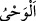

121. Üzerine Allah’ın adı anılmadan kesilen hayvanlardan yemeyin. Kuşkusuz bu
büyük günahtır. Gerçekten şeytanlar dostlarına, sizinle mücadele etmeleri için
telkinde bulunurlar. Eğer onlara uyarsanız şüphesiz siz de Allah’a ortak koşanlar
olursunuz.
Kesilirken “üzerine” kasden “Allah’ın adı anılmayan hayvanlardan yemeyiniz!”
Unutan, unutma halinde mükellef değildir. Allah’ın zikri, her mü’minin kalbindedir.
Kasden besmeleyi terkeden kimse ise sanki kalbinde olanı reddetmiş gibi olur ve onun
kestiği leş hükmündedir. Çünkü onu boğazlarken Allah’ın adı anılmamıştır. Allah
Teâlâ’dan başkası adına boğazlanan da aynı hükme tâbidir.
“Çünkü o” yani üzerine Allah’ın adı anılmaksınız boğazlanan hayvanın etinden yemek
ya da kasten besmeleyi terketmek, “fasıklıktır.” Helâl olanları bırakıp, helâl
olmayanlara sapmaktır.
İmam-ı A‘zam’a göre boğazlanırken kasden besmele terkedilen bir hayvanın etinden
yemek helâl olmaz.
Müşrikler, mü’minlerle tartışıyorlar ve: “Kendi boğazladıklarınızı yiyorsunuz da,
Allah’ın öldürdüklerini niçin yemiyorsunuz?” diyorlardı. Allah Teâlâ bu âyeti indirdi
ve genel bir cevap verdi. Haramlığı hepsini içine alan bir vasfa, yani Allah’ın adının
anılmamasına bağladı.
“Şeytanlar” yani İblis ve askerleri, müşrik “dostlarına sizinle” ey mü’minler, leşi
helâl saymanız için şeytânî vesveselerle “mücadele etmeleri için fısıldarlar.” vesvese
ve telkinde bulunurlar.
Burada ( __WORD__ ), gizlice bir manayı kalbe ilkâ etmektir.
“Eğer” haramı helâl saymak hususunda“onlara uyarsanız” ve bâtıl işlerinde onlara
yardım ederseniz, “şüphesiz siz de Allah’a ortak koşanlar olursunuz.” Allah’a itâati
terkedip de başkalarına itâat eden ve dinde ona tâbi olan, onu Allah’a ortak koşmuş,
hattâ onu yüce Allah’a tercih etmiş olur.
Yemeklerinizi ancak Allah’ın emri ile, onun zikri üzere ve onu taleb için yiyiniz ki
yemeğin zulmeti ve şehveti zikrin nûru ile def’edilmiş olsun. Çünkü yemeğin zulmet ve
şehveti, insanı fıska götürür. Fısk, ruhânî âlemin nurlu ikliminden çıkıp nefsânî
isteklerin zulmetine girmektir. Bir hadiste: “Allah’ın adı anılmayan yemeği, şeytan
mübâh sayar.”[160] buyurulmuştur. Çünkü, yemeğe başlandığı halde besmele
çekilmemiştir. Yemeğe kimse başlamadan, şeytan onu kendisi için mübah sayma imkânı
bulamaz.
Burada şu işârî mânâ vardır: Yemeğe başlarken bir kişi besmele çekse bu, yiyenlerin
tamamı için yeterli ve geçerlidir. Yemeğe başlarken besmeleyi unutanın, onu hatırladığı
vakit “bismillahi evvelehu ve ahirahu” yani “Allah’ın adıyla, başında da, sonunda
da”, der. Böyle söylerse önceki hatasını telafi etmiş olur.
Abdestte ise durum böyle değildir. Onda besmeleyi hatırladığı yerde söylemesi